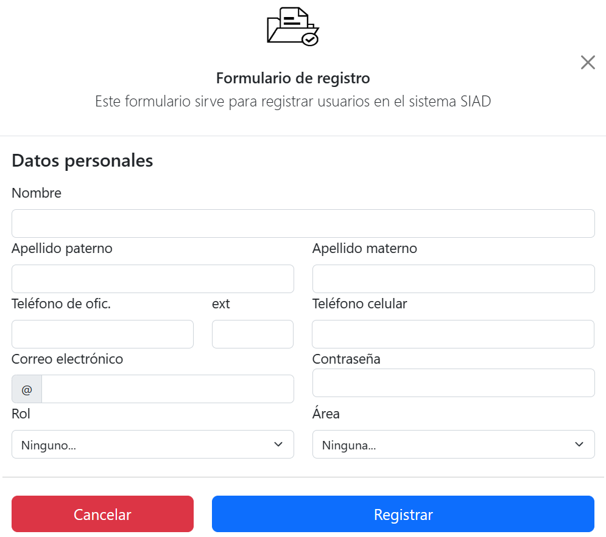

OBJETIVO Y ALCANCE
El presente manual sirve como referente para que el Coordinador Académico, pueda llevar a cabo su labor dentro del aula y con los alumnos; a través de los diferentes apartados.
La forma de desempeño y la atención brindada por parte de un Coordinador Académico influyen en la retención del alumnado.
OBJETIVO DE LA GUÍA
Conocer las herramientas disponibles en el módulo de Aula Digital, así como su aplicación dentro del aula.
1.- Ingresa al sistema y selecciona la opción Usuarios.

2.- Da clic en la opción Nuevo Usuario.

3.- Llena los campos requeridos y se muestran cuales deben ser obligatorios.
CAMPOS A COMPLETAR:
[1]Nombre:Puede ser con mayúsculas o minúsculas
[2]Apellido Paterno:
[3]Apellido materno:
[4]Teléfono de oficina:Depende el caso de donde se ubicara.
[5]Teléfono celular: Uno que este verificado
[6]Correo electronico: Proporcione el institucional
[7]Contraseña:No se comparte a
[8]Rol: Se desglosan en Archivista y Unidad Central de Correspondencia
[9]Área: Se desglosan en Secretaria, Departamentos y Dirección.

1.- Ingresa al menú Docentes y Cargas Horarias y selecciona la opción Grupos.

2.- Selecciona los filtros por ciclo escolar, plantel, plan de estudios y grado escolar en el que deseas asignar un docente. Da clic en CONFIGURAR.

3.- Selecciona el docente que impartirá la materia y coloca la fecha inicio y fecha fin que tendrá la materia; también puedes seleccionar el aula en donde se impartirá la clase.

1.- Ingresa al menú Docentes y Cargas Horarias.

2.- Selecciona los filtros por ciclo escolar, plantel, plan de estudios y grado escolar en el que deseas asignar un docente. Da clic en CONFIGURAR.

3.- Ingresa a la pestaña Horarios y selecciona la materia para configurar las horas de clase.


1.- Para dar de alta horario de asesoria ingresa al menú Docentes y Cargas Horarias, realice la busqueda del docente y de clic en Cargar Horarios.

2.- Selecione el dia y horario y de clic.

Los campos con * rojo son obligatorios.
[1] Día Seleccioando: Muestra el dia seleccionado.
[2] Tipo de Gestión Integrada: Seleccione del catalogo Assesoria.
[3] Asignatura Asociada: Puede seleccinar la casilla si la Asesoria esta relacionada con la materia que imparte.
[4] Descripción: Una breve descripción de la Asesoria (Este campo no es obligatorio).
[5] Horaio: Se define la hora de inicio y termino de la Asesoria.
[6] Color: Agregue un identificador de color la horario de la Asesoria para mostrar en el calendario.
De clic en Guardar Registro

En el calendario aparecera en el color el horario de la Asesoria.
El docente visualiza.
Si se deséa visualizar los alumnos de una asesoría solicitada, damos clic en el botón alumnos registrados.
Al visualizar los alumnos registrados de una asesoría, podrás realizar el pase de lista de los estudiantes que asistieron.

Resultados de examen de admisión.
- Ingresa al menú Admisiones y da clic en la opción Resultados Exámenes (Aspirantes).

- Se podrá filtrar por Oferta educativa y Periodo.

- Aparecerá un listado con los planes de estudios, periodos y resultados de cada oferta educativa.

- Da clic en la opción Resultados de un plan de estudios. Aparecerá una nueva ventana donde podrás filtrar los resultados por estatus de examen, estatus de examen psicométrico, estatus de inscripción y estatus de entrevista.

- Se tiene la opción de bajar un archivo en formato .xls. Para visualizar el seguimiento de cada alumno, da clic en el boton Descargar.
- Más abajo encontrarás un listado de alumnos con columnas donde podrás consultar resultado de examen psicométrico y examen de admisión, así como la opción para aceptar o rechazar el aspirante.

- En la columna de Examen, da clic en la opción Resultados para poder revisar los puntos obtenidos en cada bloque por el aspirante.

- Da clic en la opción incidencias, para revisar la actividad del aspirante durante el tiempo en el que realizaba su examen.

Estadísticas por Licenciatura.
- Ingresa al menú Admisiones y da clic en la opción Resultados Exámenes (Aspirantes).
- Aparecerá un listado con los planes de estudios, periodos y resultados de cada oferta educativa.

- Da clic en la opción Estadística, para mostrar resultados generales graficados que obtuvieron los alumnos por sección.

- Más abajo encontrarás un listado de alumnos con columnas, donde podrás consultar resultado de cada sección con el número de preguntas y el total de aciertos por alumno.

Resultados de examen psicométrico.
- Ingresa al menú Admisiones y da clic en la opción Resultados Exámenes (Aspirantes).
- Aparecerá un listado con los Planes de estudios, Periodos y Resultados de cada oferta educativa.

- Da clic en la opción Resultados de un plan de estudios. Aparecerá una nueva ventana, donde podrás filtrar los resultados por estatus de examen, estatus de examen psicométrico, estatus de inscripción y estatus de entrevista.

- Más abajo encontrarás un listado de alumnos con columnas, donde podrás consultar resultado de examen psicométrico y examen de admisión; así como la opción para aceptar o rechazar el aspirante.

- Da clic en el ícono documento, que esta en la columna de Examen psicométrico, para revisar los puntos obtenidos en el examen.

- Da clic en el ícono de gráfica, que esta en la columna de Examen psicométrico, para revisar los resultados en forma visual.

- Se mostrará una nueva ventana con dos pestañas, en la primera el examen de Intereses/Aptitudes y en la otra Test de Raven.

- Da clic en la pestaña del examen Intereses/Aptitudes, se mostrará una pantalla con diferentes pestañas; da clic sobre la pestaña a revisar.

- Da clic sobre la pestaña Test de Raven. Se mostrará solo el resultado general.

Entrevista.
- Ingresa al menú Admisiones y da clic en la opción Resultados Exámenes (Aspirantes).
- Aparecerá un listado con los planes de estudios, periodos y resultados de cada oferta educativa.

- Da clic en la opción Resultados de un plan de estudios. Aparecerá una nueva ventana donde, podrás filtrar los resultados por estatus de examen, estatus de examen psicométrico, estatus de inscripción y estatus de entrevista.
- Más abajo encontrarás un listado de alumnos con columnas donde podrás consultar resultado de examen psicométrico y examen de admisión así como la opción para aceptar o rechazar el aspirante.

- En la columna Entrevista se mostrará un estatus de la entrevista que podrá ser agendado o por agendar, y un botón para poder realizar la consulta del estatus o agendar la entrevista.

- Se mostrará una venta con la descripción de la entrevista y el estatus de la misma, en la parte derecha un botón que permite la descarga de el reporte si la entrevista ya se realizó.

- Más abajo de esa misma venta se encuentran 2 pestañas. La primera pestaña Agendar entrevista, mostrará si existe ya una entrevista agendada y la opción de realizar el pase de la asistencia cuando se realice la misma. También permite agendar una nueva entrevista si así se requiere; esta entrevista también se verá reflejada en la vista del aspirante.

- Para generar una nueva entrevista de Clic en +Registrar una cita
- llenes los campos

- Ya estara generada la cita.

Agendar Cita Grupal

- De clic en el botón de Generar Grupal.
- Selecione los alumnos a Citar.
- llene los campos y de clic en Agendar citas para alumnos.


- En la otra pestaña de nombre Formulario de la entrevista, se mostrarán las preguntas a realizar en el momento de la misma. Para actualizar la información solo se debe dar clic en el botón Guardar Información.

Aceptación de aspirantes.
- Ingresa al menú Admisiones y da clic en la opción Resultados Exámenes (Aspirantes).
- Aparecerá un listado con los planes de estudios, periodos y resultados de cada oferta educativa.

- Da clic en la opción Resultados de un plan de estudios. Aparecerá una nueva ventana donde podrás filtrar los resultados por estatus de examen, estatus de examen psicométrico, estatus de inscripción y estatus de entrevista.
- Más abajo encontrarás un listado de alumnos con columnas donde podrás consultar resultado de examen psicométrico y examen de admisión así como la opción para aceptar o rechazar el aspirante.

- Sobre la columna de Confirmación, da clic en el botón Aceptado o Rechazado según sea el caso. La información se guardará en forma automática.

Estatus de Aspirante
- Ingresa al menú Admisiones y da clic en la opción Aspirantes.
- En la columna Proceso, se mostrarán las etapas pendientes del aspirante (pago pendiente).
- En la columna Documentos, se mostrará el estatus de los documentos faltantes.

- Al dar clic en el apartado Etapa pendiente, se mostrarán del lado izquierdo Información Personal y Documentación.

- En Documentación, damos clic y nos aparecerán los documentos que el alumno puede cargar al sistema, asi como las acciones (Documento faltante, Validar Documento) para cada documento.

1.- Da clic en el Menú Calificaciones y Asistencias, opción Calificaciones.

- Filtra por Plan de estudios, Ciclo escolar, División Académica o Grado escolar y da clic sobre el botón Calificaciones.

- Se mostrará una ventana donde debes seleccionar la asignatura a consultar.

- Se mostrará:
- Nombre del alumno.
- Parcial 1,2,3.
- Recuperación de Parcial 1,2,3.
- Promedio.
- Calificación final.
- Extraordinario

2.- Da clic en el Menú Calificaciones y Asistencias, opción Pase de Lista.

- Selecciona Plan de estudios, Ciclo escolar, División Académica, Grado Escolar y da clic en Pase de Lista.

- Selecciona una materia, selecciona un día de la semana, y da clic en Listar Alumnos. Se mostrarán los alumnos y en la parte superior del listado se encuentra un botón para pasar asistencia a todos los alumnos. En la parte derecha se encuentran 2 botones, uno para PDF y otro para Excel.

Da clic en el menú Inscripciones, opción Inscritos.

- Filtra por Ciclo escolar, Plantel, Estatus, Oferta Educativa, Grado, Grupo o escribe en la barra de búsqueda el nombre de un alumno.

- Una vez que se muestra los alumnos o alumno de búsqueda, da clic en el botón Asignaturas que se encuentra sobre la columna Ajuste de Inscripción; se mostrarán dos pestañas, la primera Información Académica donde se mostrará la carga académica actual y la otra pestaña Ajustar Información Académica.
- Da clic sobre esta última. Selecciona el grado y grupo al que se inscribirá el alumno y da clic en el botón Guardar para finalizar la Re-Inscripción.

Podra dar seguimiento del Alumno.

1.- Da clic en el Menú Configuración, opción Instalaciones.

- Se mostrará una ventana con un listado de las instalaciones dadas de alta. Para agregar una Nueva instalación, da clic en el botón Nuevo registro.

- Selecciona y llena los campos necesarios para identificar la nueva instalación y da clic en Guardar para finalizar el registro.

2.- Da clic en el Menú Organización, opción Espacios.

- Se mostrará una lista de los espacios dados de alta; en la parte superior derecha, visualizarás dos botones.

- El primer botón Tipos de espacios, mostrará la descripción de cada uno.

- El botón Nuevo registro, permitirá dar de alta un nuevo espacio.

- Selecciona los datos y llena los campos para dar de alta el nuevo espacio, para finalizar da clic en el botón Guardar.
- Dentro del módulo de Coordinación académica, dé clic en el menú Calificaciones y Asistencias y de clic en la opción Exámenes por competencias.

- Seleccione el cuatrimestre y el programa educativo. Puede buscar el docente desde la barra de búsqueda disponible.

- Se mostrarán los aplicadores y asignaturas registradas en el periodo seleccionado. Para poder visualizar todas las propuestas de los alumnos, damos clic en el botón Listado de propuestas.


- Al visualizar las propuestas de los alumnos, se mostrará el listado del periodo activo. Este listado nos mostrará el estatus de cada solicitud realizada por los alumnos pendientes de autorización.

- Para poder registrar un nuevo aplicador de examen por competencia, damos clic en el botón Nuevo registro.

- Al realizar un nuevo registro nos pedirá la siguiente información:
- Periodo.
- Programa Educativo.
- Docente.
- Asignatura.
- Estatus.

- Al momento de realizar el registro, se mostrará el listado de aplicadores, el cual indicará el periodo, el aplicador, la asignatura, el no. de alumno que se han autorizado o propuestos y el estatus.

- El registro se podrá Editar o Eliminar, siempre y cuando no se haya autorizado un alumno o propuesto un alumno.
- Para poder autorizar las solicitudes de los alumnos de una asignatura, damos clic en el botón Seguimiento de alumnos.

- Al dar clic en Seguimiento de alumnos, tendremos que indicar que proceso se va a realizar.
- Autorizar exámenes por competencias
- No Autorizar exámenes por competencias
- Si seleccionamos Autorizar, nos listará a los alumnos que realizaron una solicitud de la asignatura asignada al aplicador y que estén pendientes de autorización.

- Por defecto está seleccionado que si se va a autorizar, pero se podrá indicar qué alumno se autoriza. Para desactivar el examen a un alumno en específico, solo desmarque la casilla de Autorizar.

- Para generar la autorización de los alumnos seleccionados de manera masiva, de clic en el botón Generar proceso; se les enviará una notificación que fue aceptada su solicitud.
- Si volvemos a visualizar el listado de propuestas, podremos ver que el estatus de los alumnos seleccionados han sido autorizados.

- En caso de realizar el proceso de No autorizar las solicitudes, en seguimientos de alumnos seleccionamos "No Autorizar exámenes por competencias" , marcamos a los alumnos que no se les va a autorizar su solicitud y damos clic en el botón Generar Proceso.

- Al regresar al listado de propuestas, podremos ver qué alumnos no autorizamos.

- Para consultar alumnos ya autorizados y el estatus de pago de su examen por competencia, damos clic en el botón Proponer alumnos.

- Se mostrará un listado de alumnos con su estatus de pago y de solicitud.

- En este módulo, podrá proponer alumnos que no hayan realizado su solicitud, de clc en el botón Nuevo registro.

- Al realizar un nuevo registro, se mostrarán los alumnos que no han cursado la materia y alumnos que han reprobado en periodos anteriores. Seleccionamos al alumno que queremos proponer y damos clic en el botón Guardar.
- En el listado de estudiantes, se visualizará al alumno que le realizamos una propuesta, y se mostrará el estatus de pendiente; esto indica que el alumno no ha aceptado la propuesta. En caso de que la acepte indicará que fue aceptada y visualizará el estatus de su pago.
Nota: en caso de que el alumno no acepte la propuesta, podrá eliminar o editar la propuesta de ese alumno.
Se encuentra en el modulo de Coordinación Académica en el menú Docentes y Cargas horarias opción *Evaluación de la practica docente.


Puede buscar al docente del cual desea evaluar.
[1] Periodo o ciclo escolar donde evaluara a los docentes.
[2] División donde evaluar a los docentes.
Podrá ver el listado de los docentes a evaluar, para comenzar con la evaluación de clic en el botón Evaluación de práctica docente del docente a evaluar.

[1]Bloques de preguntas .
Consiste en un listado de preguntas y de acuerdo al bloque que pertenecen. Se podrán seleccionar dando clic en el número.
[2]Pregunta seleccionada.

Mostrará la pregunta que ha sido seleccionada, la cuál deberá ser contestada.

De clic en la respuesta con la que mas se identifica, una vez contestada la pregunta cambiará el estatus de color blanco a azul; lo que indica que la pregunta ha sido contestada.
Nota: Podrá regresar a las preguntas ya contestadas y modificar su respuesta.

Podrá contestar en cualquier orden los bloques de preguntas hasta finalizar con todos.
Si por algun motivo no termina la evaluación, podrá continuar mas tarde dando clic en en el docente que estaba evaluando.
Nota: Recuerda que hay una fecha límite para contestar la Evaluación de la Practica Docente.
Una vez terminada la evaluación, de clic en el botón Enviar y terminar mi evaluacion.

Nota: Deberá contestar todas las preguntas de lo contrario, NO podrá enviar su evaluación y le aparecerá una advertencia.

Si ha contestado todas las preguntas, de clic Enviar y terminar mi evaluación, le pedirá confirmar el envio de la evaluación.

De clic en Si, continuar para terminar Evaluación de la Practica Docente.

Una vez concluida la Evaluación de la Practica Docente, el estatus y pondrá en color azul el docente evaluado, podrá continuar con el siguiente docente o finalizar el proceso.
Nota: Si por algun motivo no termina la Evaluación de la Practica Docente, con algun docente podrá continuar mas tarde dando clic en botón Evaluación de la Practica Docente del docente Seguir contestando.
Se encuentra en el modulo de Servicios Escolares menú Estudiantes opción Equivalencia.

Podrá ver el listado de alumnos que han solicitado equivalencia de estudios.
Para realizar la búsqueda de alumnos use el filtrado o ingrese su nombre o no. de control escolar.

En las diferentes columnas podrá observar información del proceso de equivalencia por alumno y podrá saber en que proceso se encuentra.
Seleccione el alumno y de clic en Solicitud dictamen para dar seguimiento en el proceso de equivalencia para el alumno.
Le pedirá confirmar la solicitud de clic en Si, enviar! para enviar la solicitud.

Le confirmara que su solicitud a sido enviada.

Regrese al listado de alumnos de equivalencia y de clic en el botón de Seguimiento del alumno que ya se encuentre en proceso de Solicitud dictamen.

Podrá ver los Datos Generales del alumno y la Documentación que a subido el alumno.
validar Documento

De clic en el botón Validar Documento para ver le documento.

Si Rechaza el documento deberá especificar la razón por la cual el documento no califica.

Si el documento esta correcto de clic en el botón Validar.

si desea puede rectificar la validación dando clic en el botón Rectificar Documento.

Agregar Asignaturas

Al dar clic en el botón Agregar Asignaturas podrá agregar las materias en el listado para la equivalencia.

1.- Seleccione la materia y de clic en Agregar materia y continué agregando las materias a dar equivalencia con las materias del Historial Académico del alumno.

En el momento de agregar la materia le aparecerá la confirmación en de que agrego la materia en la parte superior derecha y la materia cambiara de estatus y se cambiara a color verde.

Al terminar de agregar materias para equivalencia solo cierre la ventana, las materias apareceran en la parter de abajo.

[1] Capturar el nombre de la asignatura de procedencia.
[2] Capturar la calificación de procedencia.
[3] Elimina la materia.

De clic en el botón de Confirmar Equivalencia para agregar las materias.

Le pedirá confirmar la acción de clic en OK para confirmar.

El estatus de proceso del alumno cambiara; de clic en el botón pdf para ver la cargar de equivalencia.

Confirme la Acción dando clic en OK para confirmar y estará en proceso de autorización en pantalla espere unos segundo.

Una vez que recargue la pagina puede proceder a inscribir al alumno dando lic en el botón Inscripción una vez que el alumno realice los pagos correspondientes.

Si al alumno no a realizado el pago total de los conceptos y aceptar la equivalencia no podra avanzar en le proceso.

De clic en el botón de Cargar Académicapara inscribir al alumno.

Seleccione el grupo donde lo inscribirá.

Deberá agregar las materias que cursara en el periodo que se inscribirá.

De clic en Agregar Materia para cargar las materias que cursara el alumno.

De clic en el botón de inscribir para terminar el proceso de equivalencia.

El alumno cambiara el estatus y ya se encontrara inscrito para seguir su proceso como alumno inscrito.